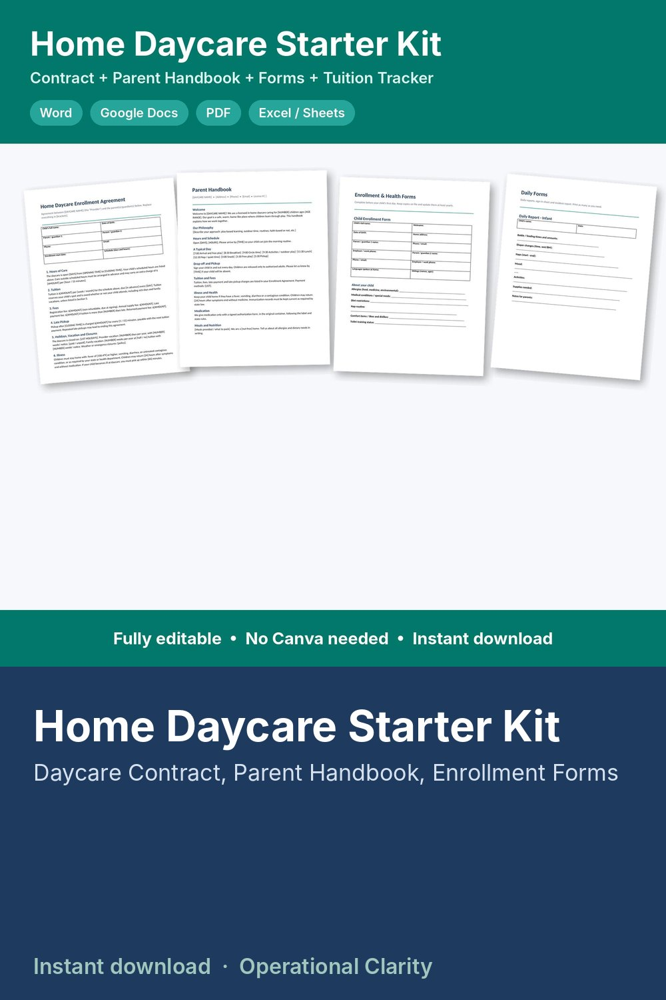

Home Daycare Starter Kit

HOME DAYCARE STARTER KIT | Daycare Contract, Parent Handbook, Enrollment & Health Forms, Daily Forms + Tuition & Attendance Tracker | Editable Word, Google Docs, PDF & Excel | Instant Download
The paperwork you need to open or organize an in-home daycare, fully editable in Word or Google Docs (no Canva needed), plus a tuition and attendance spreadsheet that does the math for you.
WHAT'S INCLUDED
1. Daycare Enrollment Agreement (Word + PDF)
• 12 sections: hours, tuition, fees, late pickup, holidays and vacation, illness, medication, meals, authorized pickup, guidance and discipline, termination, policies + signatures
2. Parent Handbook (Word + PDF)
• 19 sections: welcome, philosophy, hours, a typical day, drop-off and pickup, tuition, illness, medication, meals, nap and safe sleep, what to bring, guidance, communication, emergencies, outdoor play and field trips, photos, closures, reporting, ending care + parent acknowledgment
3. Enrollment & Health Forms (Word + PDF)
• Child enrollment form, emergency contacts and medical information, authorized pickup, medication authorization + medication log, photo and media release, field trip and transportation permission
4. Daily Forms (Word + PDF)
• Infant daily report, toddler/preschool daily report, weekly sign-in / sign-out sheet, incident / injury report
5. Tuition & Attendance Tracker (Excel / Google Sheets)
• Weekly or monthly tuition for up to 30 children
• Sign-in and sign-out times with hours and late pickup fees calculated automatically from your closing time
• Payments and fees log, balance owed for every family
• Year-end payment statement for each family, ready to print and sign
• Dashboard: children enrolled, monthly tuition, collected this month, money owed, late pickups
6. Start Here guide
GOOD TO KNOW
• These are templates, not legal advice. Childcare licensing rules (ratios, required forms, medication, discipline, health and safety) differ by state. Check your state's requirements and edit the documents to match before use.
• Digital download. No physical item will be shipped.
• For use in your own daycare. No reselling or sharing of the files.